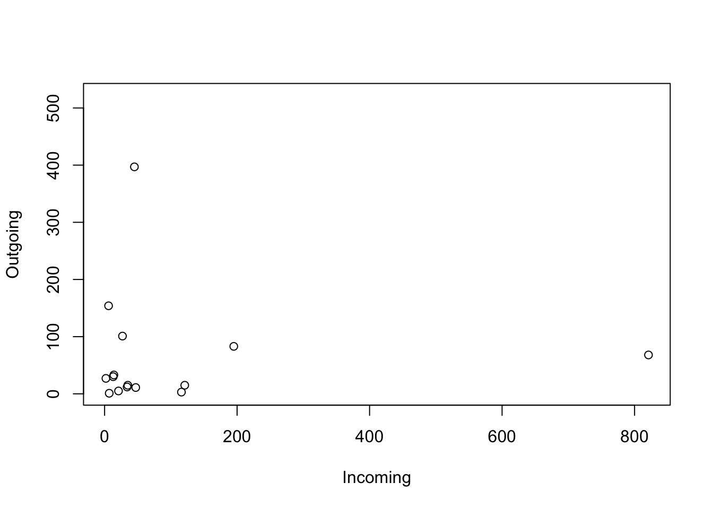
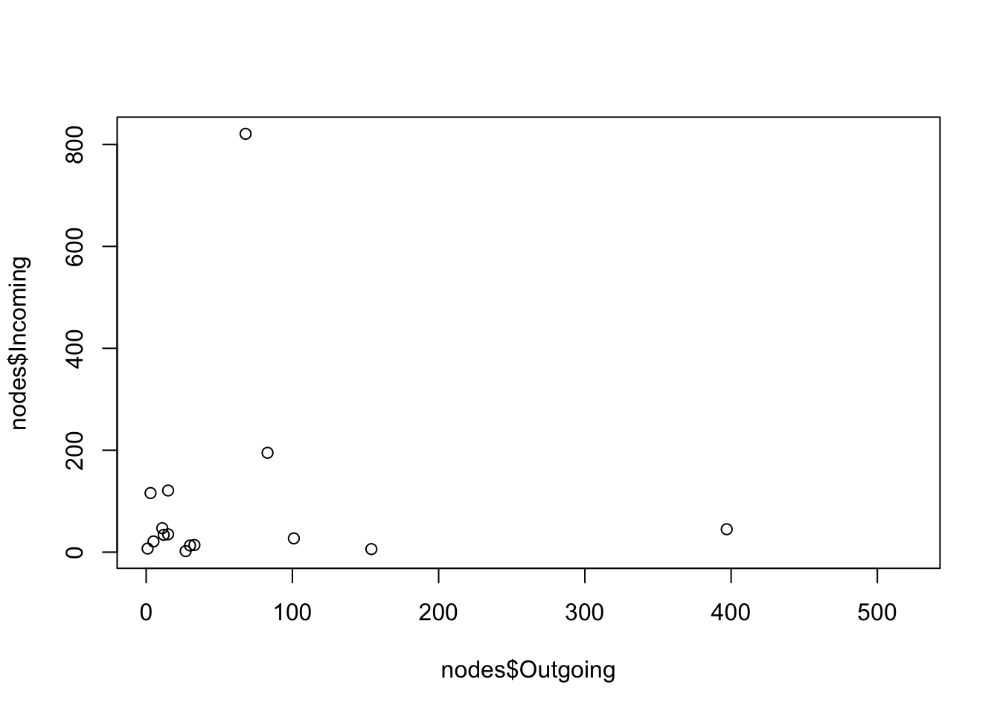
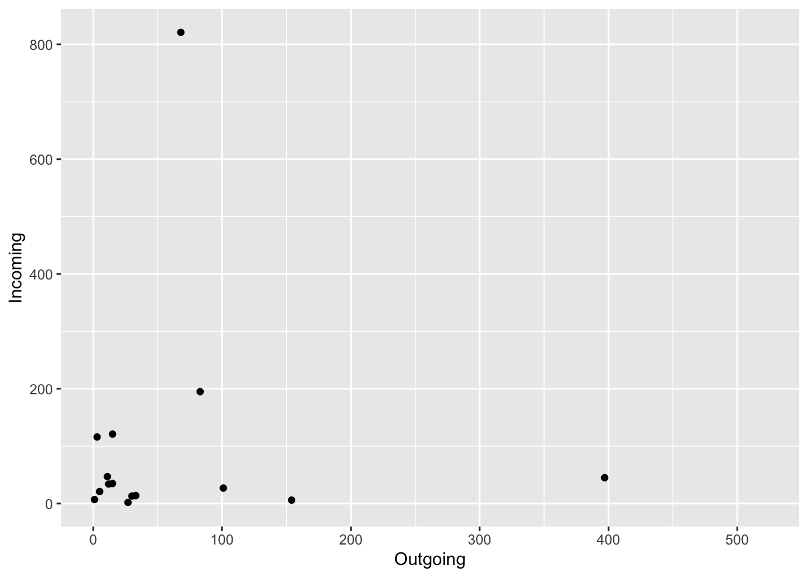
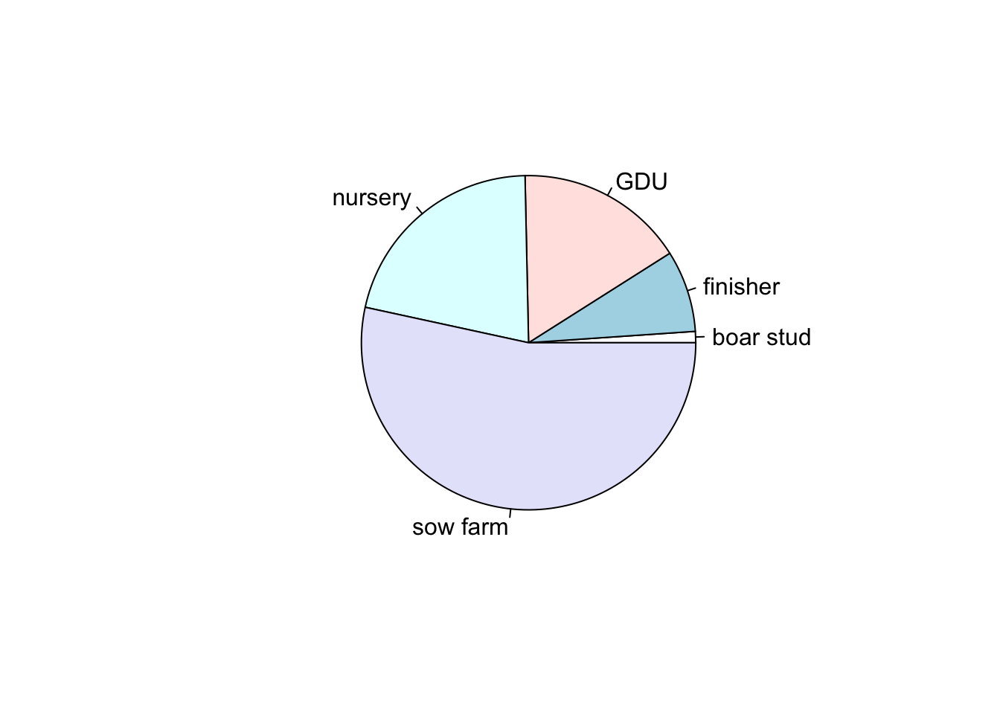
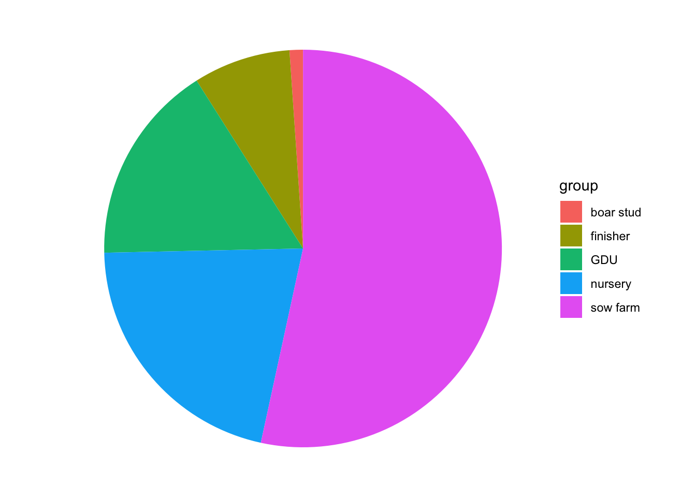
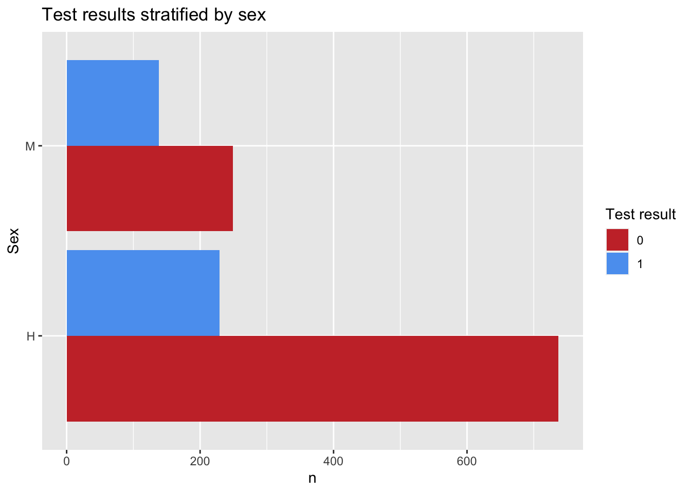
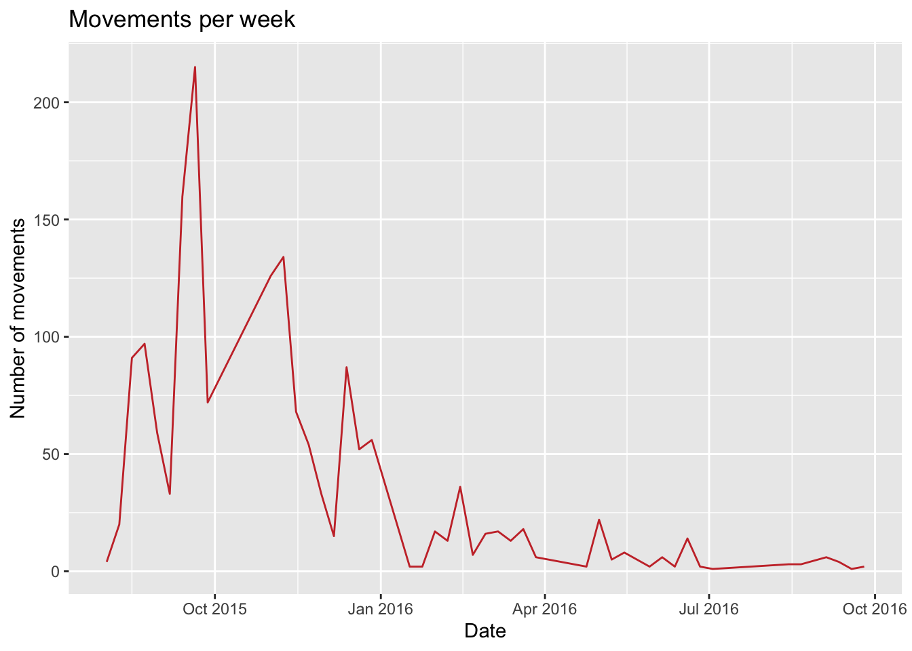
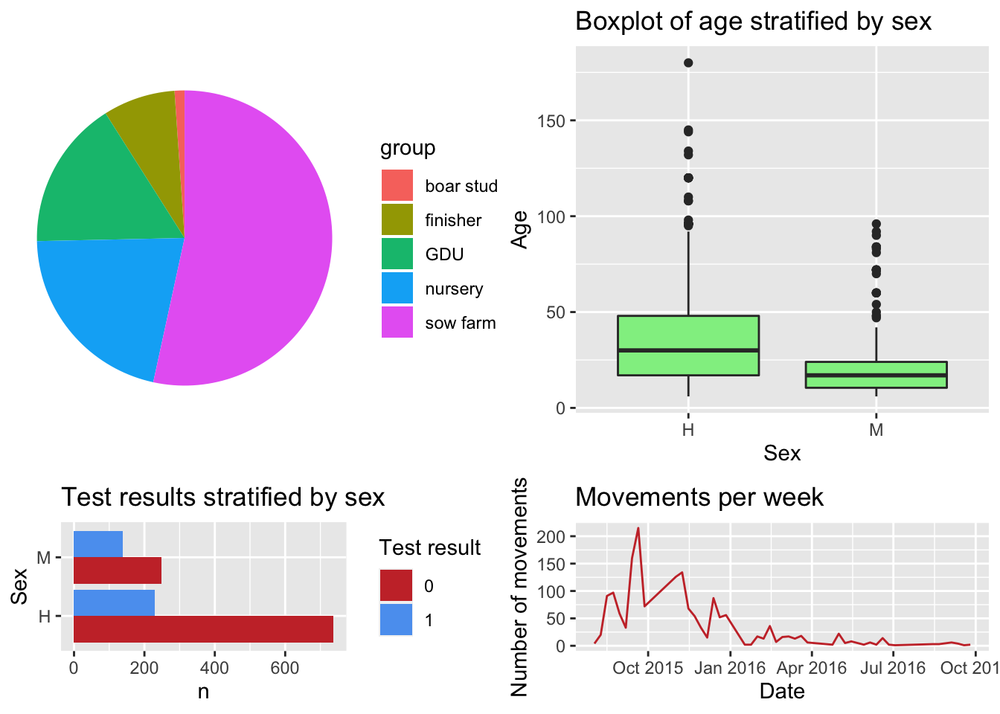
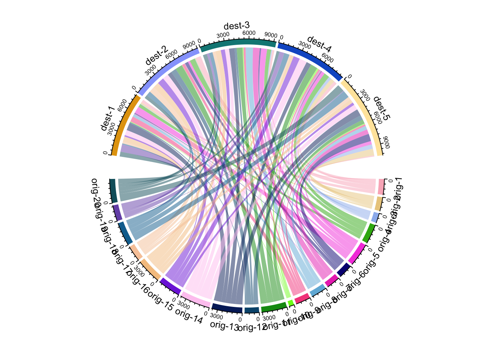

Introduction to R
Jose Pablo Gomez-Vazquez
1 Basic operations
R is like a calculator, we can make mathematical operations, for example:
2 + 2## [1] 4R is a object-oriented programming language, this means that we create objects that contain information. In R you can achieve the same results using different approaches, for example, to create an object we just type a name for the object and assign it a value using the operators = or <-. We can make operations with objects of the same type, for example:
x = 2 # create a new object with the = operator
y <- 2 # create a new object with the <- operator
x + y # make a operation with the objects## [1] 4You can store more than one value using vectors, to create a vector of numbers we use c(). For example, we will store a sequence of numbers from 5 to 10 using 2 different approaches and then ask R if the objects are the same.
tip: using the keys “alt” + “-” will automatically add the operator <-. Choosing which assign operator to use is a matter of preference, I personally think that is easier reading code with the operator <-, but a lot of people uses =.
x <- c(5, 6, 7, 8, 9, 10) # create a sequence form 5 to 10
y = 5:10 # create the same sequence but with a different approach
x == y # ask R if the objects have the same information## [1] TRUE TRUE TRUE TRUE TRUE TRUEWhen we have a vector, we can ask R specific values inside an object.
# Here we ask the 3rd value from our sequence
x[3]## [1] 7# Now we multiply the 3rd value of the x sequence times the 5th value of the y sequence
x[3] * y[5]## [1] 631.1 Functions in R
R has a lot of base functions, but we can define new functions. When using R studio, the key Tab will help us to auto complete, this can help us a lot when we don’t remember the exact name of the functions available. The best part of programming with R is that it has a very active community. Since its open source, anyone can create functions and compile them in a package (or library). we can download these packages and access new functions.
Functions in R require arguments, which we can see in the function documentation or if we press the key Tab when we are inside the function.
# To get the sum of a vector of numbers inside an object we use sum()
sum(x)## [1] 45We can put functions inside function, for example, to get \(\sqrt{\sum_1^n x}\) the square root of a sum of the numbers in x we can use:
sqrt(sum(x))## [1] 6.708204Making functions in R is not as complicated as it sounds and can be very useful when we need to do repetitive work. To define a function we need to include the arguments that we want for the function and what are we doing with those arguments. For example, the following function has only one argument which is a name (string) and just pastes some text before and after:
F1 <- function(name){
x <- paste("Hola", name, "! welcome to the R world!") # paste the name with some text
print(x)
}
# trying the function (Put your name)
F1(name = "Pablo")## [1] "Hola Pablo ! welcome to the R world!"Besides storing numbers in the objects in R, we can store text, matrices, tables, spatial objects, images, and other types of objects. Next we will import our own data and do some manipulation in R.
2 Importing data into R
R can import data in different formats. The most common are excel files (.csv, .xls y .xlsx), text files .txt and spatial data .shp, which we will talk about more in detail later.
To read .xls, .xlsx and .shp files we will need to install some libraries. To install a new library you need to be connected to the internet and use the function install.packages() to install the library. Once it has been installed, you can load the library using the function library().
Download the excel file from this link. It’s not necessary to have a Box account.
Suggestion: Sometimes when we want to use only one function from a library, we can just write the name of the library followed by the operator :: and the name of the function, for example: package::function(). This way we won’t have to load the whole library.
# If we dont have the library installed, we use:
# install.packages("readxl")
library(readxl) # load the library
# Import the excel file
PRRS <- readxl::read_xlsx("Data/PRRS.xlsx")The most popular format for tables in R are called data.frame, when we import the data from a .csv o .xlsx. We can examine what kind of object it is using the function class(), an object can have more than one type of class.
class(PRRS)## [1] "tbl_df" "tbl" "data.frame"3 Creating tables in R
We can use the base R functions to create basic tables. For example, we can create a table that shows the number of positive by sex:
TBL <- table(PRRS$Sex, PRRS$Result)
TBL##
## 0 1
## H 737 229
## M 249 138When we have a table object we can ask for a specific column or row, where is represented as [row, column].
TBL[,2] # Get the second column## H M
## 229 1383.1 Data manipulation with dplyr
The library dplyr has several functions that can help to clean, create new variables, and modify our data in other ways.
# if we dont have installed the library we will need to install it using:
# install.packages("dplyr")
# we load the library:
library(dplyr)dplyr introduces a new operator called pipes (%>%), which can connect several functions to an object. This is an alternative to write several functions in a single “line of code” in a more organized way. For example, if we want to execute a function F1() followed by another function F2() for the object x:
F2(F1(x)) is equivalent to x %>% F1() %>% F2()
As you can notice, to read the code F2(F1(x)) we have to go from the inside to the outside to see the order of execution of the functions, but when we read x %>% F1() %>% F2() we read from left to right, which is the same way we normally would read any text.
Suggestion: we can use the keys Ctrl + shift + m to insert the %>% operator.
We will use this to calculate the prevalence by county:
PRRS %>%
group_by(County) %>%
summarise(N = n(), positive = sum(Result)) %>%
mutate(Prev = positive/N) %>%
arrange(desc(Prev))## # A tibble: 28 × 4
## County N positive Prev
## <chr> <int> <dbl> <dbl>
## 1 Story 37 30 0.811
## 2 Pottawattamie 51 34 0.667
## 3 Bremer 24 14 0.583
## 4 Hardin 105 50 0.476
## 5 Scott 57 22 0.386
## 6 Audubon 19 7 0.368
## 7 Grundy 34 11 0.324
## 8 Johnson 89 27 0.303
## 9 Wright 115 33 0.287
## 10 Keokuk 18 5 0.278
## # … with 18 more rowsOk, so we used several functions connected to calculate the prevalence, so I will explain it by parts:
- First we put the name of our data.
- The first function
group_by()will group the observations by one or more variables that we indicate.
- The function
summarise()will execute a function we define for a variable from the defined grouping variable, e.g. when we writen()returns the number of observations per group and withsum(resultado)we are summing all the positive results by each county.
- The function
mutate()will create a new variable, we use the variables N and positive created with the previous functions and calculating the prevalence.
Exercise: Now try to calculate the prevalence by farm type (variable farm_type):
# Answer
PRRS %>%
group_by(farm_type) %>%
summarise(N = n(), positive = sum(Result)) %>%
mutate(Prev = positive/N) %>%
arrange(desc(Prev))## # A tibble: 5 × 4
## farm_type N positive Prev
## <chr> <int> <dbl> <dbl>
## 1 sow farm 549 196 0.357
## 2 GDU 202 60 0.297
## 3 boar stud 19 4 0.211
## 4 finisher 158 29 0.184
## 5 nursery 425 78 0.184We can use any function with summarize, this is very useful because it allows to obtain quick statistics stratified by groups, for example, we can obtain the median, mean and variance by age and sex:
PRRS %>%
group_by(Sex) %>%
summarise(media_edad = mean(Age), mediana_edad = median(Age), SD_edad = sd(Age))## # A tibble: 2 × 4
## Sex media_edad mediana_edad SD_edad
## <chr> <dbl> <dbl> <dbl>
## 1 H 35.9 30 24.7
## 2 M 19.8 17 15.13.2 Joining datasets:
# Importing the farm dataseet
nodes <- read.csv("Data/node_attrib.csv")
# Importing the movement dataset
mov <- read.csv("Data/network.csv")
# Get the number of outgoing and incoming shipments
Out <- mov %>%
group_by(id_orig) %>%
summarise(Outgoing = n()) %>%
rename(id = id_orig)
In <- mov %>%
group_by(id_dest) %>%
summarise(Incoming = n()) %>%
rename(id = id_dest)
# Joining the two datasets
nodes <- nodes %>%
left_join(Out, by ="id")
nodes <- nodes %>%
left_join(In, by = "id")
nodes## id name lat long
## 1 1 Iowa Select Farms Inc 42.50489 -93.26323
## 2 2 Stanley Martins Fleckvieh Farms 43.08261 -91.56682
## 3 3 Centrum Valley Farms 42.66331 -93.63630
## 4 4 Hilltop Farms fresh produce 41.71651 -93.90491
## 5 5 Hog Slat Inc. 42.25929 -91.15566
## 6 6 Safari Iowa Hunting Farms 41.56854 -92.02317
## 7 7 Kloubec Koi 41.83465 -91.81982
## 8 8 Johnson Farms Supply 42.85789 -93.61687
## 9 9 Kroul Farms 41.87700 -91.47084
## 10 10 Steve Robinson Farm Shop 41.96634 -91.19099
## 11 11 Loess Hills Lavender Farm 41.67884 -95.93713
## 12 12 Uncle Bill's Farm 41.71713 -92.73772
## 13 13 Wild Woods Farm 41.70194 -91.47338
## 14 14 Western Iowa Farms LLC 42.44647 -96.25294
## 15 15 Mushroom Mills 41.20559 -91.37005
## 16 16 Kruger Farms 42.41710 -92.69073
## 17 17 US Farm Lease 41.64893 -93.62416
## 18 18 Dawn Golden Farms 43.08464 -91.56918
## 19 19 Kris Del Farms Corporation 41.62007 -90.64899
## 20 20 Lapp\x89\xf6_\xe5\xa9's Bee Supply and Honey Farm LLC 41.22699 -93.92651
## 21 21 Nelson Pioneer Farm & Museum 41.33235 -92.62145
## 22 22 WinMor Farms 41.71702 -92.65580
## 23 23 Armstrong Research Farm 41.30823 -95.17208
## 24 24 Cinnamon Ridge Farms 41.71469 -90.69231
## 25 25 Rustik Rooster Farms 42.89116 -92.33734
## 26 26 Picket Fence Creamery 41.82968 -93.93218
## 27 27 Doe's and Diva's Dairy, Inc. 41.46512 -95.82878
## 28 28 Bushman Family Farms Inc 43.09108 -91.82770
## 29 29 Johnson Farms Inc 43.45690 -92.28017
## 30 30 Premier Grain 42.27013 -91.67477
## 31 31 Bethany Farm 41.56188 -94.88469
## 32 32 Farm Sweet Farm at Rosmann Family Farms 41.68048 -95.38560
## 33 33 Iowa Farm Family 42.30512 -93.29866
## 34 34 Iowa State University Horticulture Research Station 42.10658 -93.58981
## 35 35 RJM Farms Inc 43.11208 -94.76516
## 36 36 Practical Farmers of Iowa 42.00683 -93.61690
## 37 37 Bass Farms 41.91948 -91.49390
## 38 38 A & D Farms Inc 41.27141 -92.01188
## 39 39 Geno Source 41.89120 -92.06679
## 40 40 Tatonka Farm 42.53873 -92.10478
## farm_type Outgoing Incoming
## 1 sow farm 30 13
## 2 sow farm NA 33
## 3 nursery 13 NA
## 4 sow farm 15 35
## 5 GDU 33 14
## 6 GDU 11 47
## 7 GDU 3 116
## 8 sow farm 83 195
## 9 nursery 6 NA
## 10 nursery 1 7
## 11 nursery 1 NA
## 12 nursery 5 21
## 13 nursery NA 2
## 14 nursery 15 121
## 15 finisher NA 42
## 16 finisher 1 NA
## 17 finisher 68 821
## 18 finisher NA 23
## 19 sow farm 397 45
## 20 finisher 27 NA
## 21 nursery 38 NA
## 22 sow farm NA 1
## 23 sow farm 21 NA
## 24 sow farm 27 2
## 25 GDU 154 6
## 26 sow farm NA 1
## 27 nursery 1 NA
## 28 nursery 22 NA
## 29 nursery 522 NA
## 30 nursery 12 34
## 31 GDU 101 27
## 32 boar stud NA 1
## 33 sow farm NA 1
## 34 sow farm NA 1
## 35 sow farm NA 1
## 36 sow farm NA 1
## 37 sow farm 1 NA
## 38 sow farm 1 NA
## 39 sow farm 1 NA
## 40 sow farm 1 NANow we will get the ones that had the higher number of movements:
mov %>%
group_by(id_orig) %>%
summarise(N = n(), N_pigs = sum(pigs.moved)) %>%
arrange(desc(N)) %>%
head()## # A tibble: 6 × 3
## id_orig N N_pigs
## <int> <int> <int>
## 1 29 522 50565
## 2 19 397 38686
## 3 25 154 15653
## 4 31 101 10711
## 5 8 83 7620
## 6 17 68 66334 Plots with R
The base plot in R includes several tools any kind of plots, some will be more straight forward than others. There are other libraries that has different functions (ggplot2 is a very popular one), but you can achieve the same with base plots.
4.1 Scatterplot.
This is one of the most popular kind of plots, it is useful to represent relationship between two continuous variables.
We can achieve the same result in different ways. The first one is better when we have our variables in the same dataset, and the second one when we have data from different objects. (the length of the two vectors has to be the same).
# When variables are from the same dataset
plot(Outgoing~Incoming, data = nodes)
# When variables from different dataset
plot(nodes$Outgoing, nodes$Incoming)
The same can be achieved with ggplot:
# We load the library
library(ggplot2)
nodes %>% # first we start with the name of our data.frame
ggplot() + # then we call ggplot
geom_point(aes(Outgoing, Incoming)) # and we add the first layer, which is the points## Warning: Removed 25 rows containing missing values (geom_point).
4.2 Pie charts
Pie charts are useful to show proportions, for example, next we will create a plot representing the proportion of positive animals for each type of farm.
To select a variables from a data.frame we use $. For example if we want to see the variable farm type from our PRRS dataset, we use PRRS$farm_type.
# First we create a table for the result by farm type
TM <- table(PRRS$farm_type, PRRS$Result)
# Then we use the second column which contains the positive only
pie(TM[,2])
We can also store our plots objects in R and call them later, here we will start storing all our plots in a single list. One of the advantages of using lists is that you can organize your information in nested structures of different kinds of objects (i.e. dataframes, plots, other lists, etc…)
Again, we can replicate this with ggplot. We just need to transform a little bit the data:
# we create an empty list
Figs <- list()
Figs[['PieChart']] <- TM %>% # the data we are using
data.frame() %>% # We convert it to a data.frame
rename(group = Var1, Test = Var2) %>% # rename some of the variables
filter(Test == 1) %>% # select only the positive cases
ggplot() + # call ggplot
geom_bar(aes(x = '', y = Freq, fill = group), stat = 'identity') + # to make a pie chart we start it as a bar chart
coord_polar('y', start = 0) + # then we change the coordinates
theme_void() # we can add themes to change its appearance
# Now when we print our list we can obtain our plot
Figs## $PieChart
It’s always nice to be familiarized with different methods to achieve the same result, as you can see, sometimes you can achieve a nice result with fewer lines of code using base R, but ggplot its more intuitive to understand (or at least to me). From now on we will focus on ggplot2 only.
4.3 Boxplots
Box plots are great to show the distribution of a continuous variable. We can use it to show only one variable, or multiple variables. It is important to be very descriptive when making plots, the idea of a figure is that can explain itselt. we will start to slowly introduce functions to do this and customize our figures.
# Only one variable
PRRS %>%
ggplot() +
geom_boxplot(aes(y = Age)) +
labs(title = 'Distribution of Age') # we can add different labels such as the main title
# Same variable, but stratified by another
Figs[['boxplot']] <- PRRS %>%
ggplot() +
geom_boxplot(aes(y = Age, x = Sex), fill = 'lightgreen') +
labs(title = "Boxplot of age stratified by sex")
# now that we have our figure stored in the list we can print it
Figs$boxplot
As you saw, when we print the list we are specifying which figure we want, since now we have 2 elements inside the list. We can just print Figs to the console, but that will show us the two figures in the list.
4.4 Bar plot
For the next plot we will expand on the customization of the plots. First we will create a color palette, then we will transform our data to make a bar plot, then we will change the axis and add labels.
# Create a new color palette:
colpal <- c("#C93434", "#5BA1F0", "#52C4A6")
# Make the plot
Figs[['BarPlot']] <- PRRS %>% # the data we are using
count(Result, Sex) %>% # we will count the number of test results by sex
ggplot() + # call ggplot
geom_bar(aes(fill = factor(Result), x = Sex, y = n), # we want the fill color by test result, x axis by sex and y for number
position = 'dodge', stat = 'identity') + # we define the position as dodge to have a side by side groups
coord_flip() + # we change the coordinates
scale_fill_manual(values = colpal) + # we specify the color palette we want
labs(title = "Test results stratified by sex", fill = 'Test result') # we add labels
# Print our barplot
Figs$BarPlot
When choosing colors in R, we can use the names of the colors, or Hex code. A very usefull tool to help with this is the Addin from Rstudio Colour Picker. we can access this tool from the Addins menu as shown below:

Exercise: Create a bar plot of the results stratified by the farm type:
# Answer4.5 Time series plots.
To create a time series we will need to reformat the data a little bit so R can do what we want.
mov <- mov %>%
mutate(date = as.Date(date, "%m/%d/%y"), # First we will format the date
week = format(date, "%V"),
week = lubridate::floor_date(date, 'week')) # The we create a variable formatting the date as week of the yearFigs[['TimeSeries']] <- mov %>%
count(week) %>%
ggplot() +
geom_line(aes(x = week, y = n), col = colpal[1]) +
labs(title = 'Movements per week', x = 'Date', y = "Number of movements")
# show the time series plot
Figs$TimeSeries
4.6 Arranging multiple plots
One of the advantages of storing all the plots in a list, is that we can very easy make an arrangement of the figures using the package ggpubr,
# load the library (install if required with)
# install.packages("ggpubr")
library(ggpubr)
ggarrange(plotlist = Figs, heights = c(2, 1))
There are multiple types of plots and selecting the most appropriate for what we want to achieve is very important. The R graph gallery is a great resource to see examples for different type of plots.
5 Runing code from other files
We can also reference other R files and run scripts we previously made. For example, here we will run a script that will install all the packages we will be using in this workshop. YOu can download the script from the shared folder or this link
source('../pkgs.R') # Make sure you have the correct path in your system# Create an adjacency matrix:
# a list of connections between 20 origin nodes, and 5 destination nodes:
numbers <- sample(c(1:1000), 100, replace = T)
data <- matrix( numbers, ncol=5)
rownames(data) <- paste0("orig-", seq(1,20))
colnames(data) <- paste0("dest-", seq(1,5))
# Load the circlize library
library(circlize)## ========================================
## circlize version 0.4.14
## CRAN page: https://cran.r-project.org/package=circlize
## Github page: https://github.com/jokergoo/circlize
## Documentation: https://jokergoo.github.io/circlize_book/book/
##
## If you use it in published research, please cite:
## Gu, Z. circlize implements and enhances circular visualization
## in R. Bioinformatics 2014.
##
## This message can be suppressed by:
## suppressPackageStartupMessages(library(circlize))
## ========================================# Make the circular plot
chordDiagram(data, transparency = 0.5)